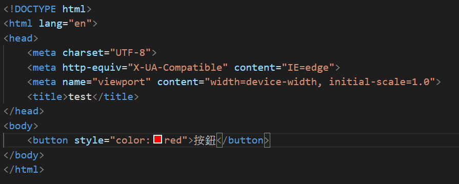
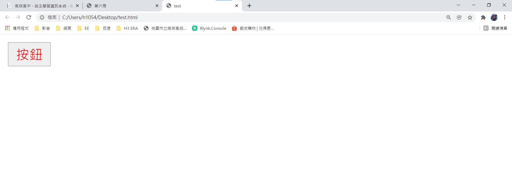
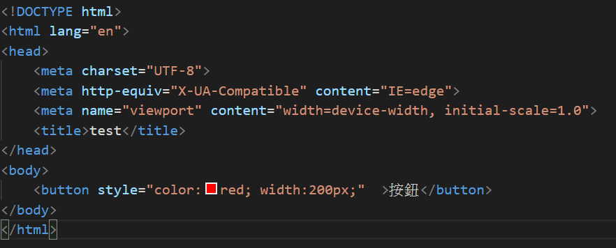
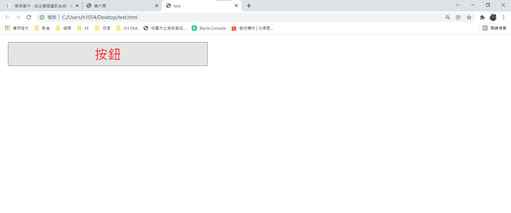
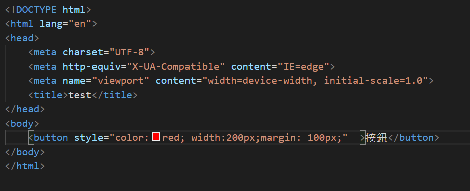
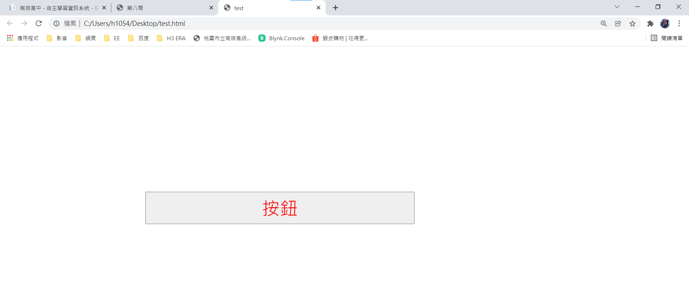

第八周:用編譯器做出按鈕並在內網上顯示按鈕的變換位置、顏色、大小效果
第一步:在< button >語法裡打上style="color:顏色"，查看文字是否變換顏色。
 
第二步:在< button >語法裡打上style="width:數字+像素"，查看按鈕寬度是否變大。
 
第三步:在< button >語法裡打上style="margin:數字+像素"，查看按鈕位置是否改變。
 
收穫:透過這周讓我了解到如何改變元素的位置。
上一周
回首頁
下一周